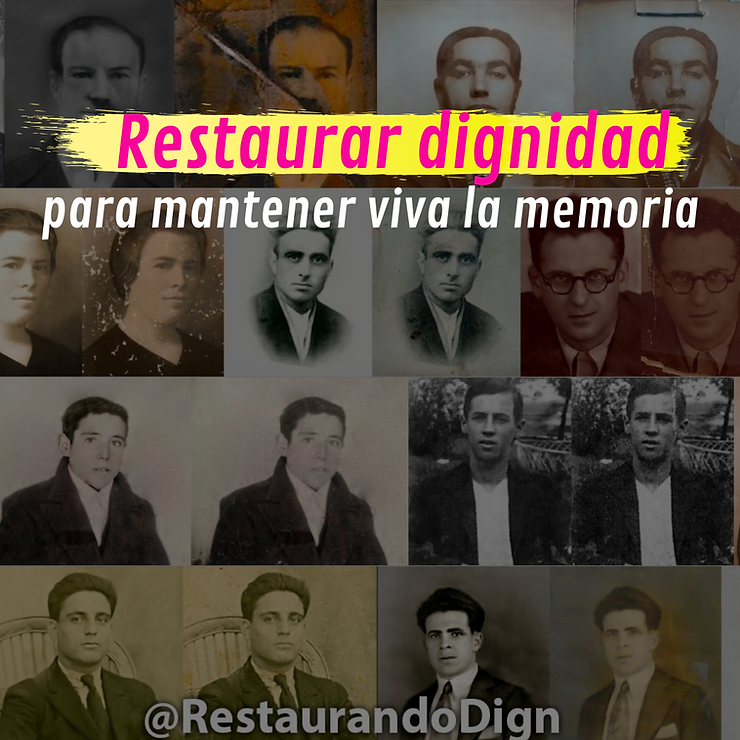
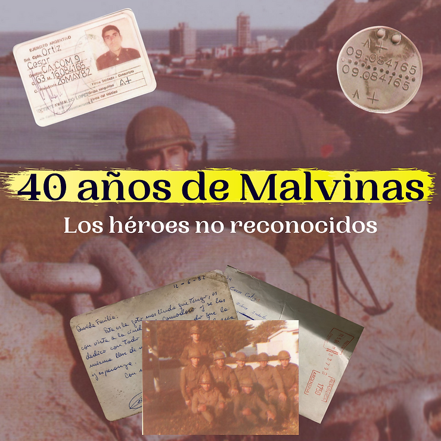

Últimas públicaciones
Restaurando Dignidad

Si en algún momento nos preguntan con qué palabra podemos relacionar una foto, una de las primeras que se nos viene a la mente es “recuerdo”. Un recuerdo de una situación, momento o persona que lo conectamos con el presente, sobre todo si hablamos de épocas en las que no cualquiera podía tener una foto, o en muchos casos, es lo único que nos queda de un ser querido.
Estas imágenes también nos sirven para reconstruir nuestro pasado, ayudándonos a mantener viva la memoria individual y colectiva. A esto se dedica Luda Merino a través de su cuenta de Twitter "Restaurando su Dignidad" (RestaurandoDign).
De regreso a su casa y con las primeras gotas de lluvia que la apuraban a llegar, la joven nos cuenta que cuando empezó a restaurar las fotos tenía 18 años y todavía no tenía el proyecto en mente. Después de hacerlo con la primera imagen que mencionó anteriormente, siguió con otras y las ponía en los comentarios de la cuenta del Museo de Auschwitz, luego se contactó con otras personas y también lo hacía para otras cuentas, como la de Homenaje Republicano. “Cuando tenía 20 años, el 27 de septiembre de 2021, decido crear una cuenta (RestaurandoDign) para restaurar fotografías de víctimas del fascismo y la guerra civil en España, y darles a los familiares un último recuerdo de su ser querido asesinado”, explica Luda.
"No se aflija mi subteniente, cuero noma e'"

Como todas las mañanas y por ser alumno de cuarto año del colegio Militar de la Nación, Ernesto Peluffo y sus compañeros se levantaron más temprano que los demás para hacer el diana del resto de la compañía. Pero ese viernes 2 de abril de 1982 Ernesto escuchó por radio sobre la recuperación de las Malvinas (Operación Rosario), entonces rápidamente avisó sobre la situación al Teniente Primero que estaba a cargo y después levantaron a la compañía en pijama y con pantuflas.
A los 7 días egresó como subteniente de comisión, sin haber sido confirmado en el grado y le tocó ir al Regimiento de Infantería 12 en Mercedes, Corrientes.
En ese momento, ante una posible contraofensiva de los británicos, los militares mandaron muchas tropas a las islas. Ernesto y su regimiento cruzaron a Malvinas el 25 de abril, pero todavía no sabían si iban a entrar en combate porque estaban las negociaciones diplomáticas y políticas, hasta que el 1 de mayo los británicos atacaron Malvinas. “Yo participé en el combate de Darwin el 28 de mayo de 1982 y fui herido en la cabeza y en la pierna en un combate diurno contra el segundo batallón de paracaidistas reales”, explica Ernesto.
En el combate de Darwin, las tropas inglesas eran profesionales con un alto grado de entrenamiento, que estuvieron en tierra menos de una semana atrás del enfrentamiento, las dificultades del clima no los habían afectado tanto.
40 años de Malvinas: Los héroes no reconocidos

“La noche que aparecieron los buzos tácticos a destruir los tanques de combustibles fue un momento muy fuerte, yo creo que eso, de alguna manera, me marcó para siempre, porque sentí la sensación de que estaba enfrente de la muerte, los comandos ingleses eran los mejores del mundo.
Fue una situación que me hizo mucho daño. Es complicado asumirlo y complicado tratarlo, nosotros no tuvimos una asistencia psicológica. Fue muy traumático”. César Ortíz, veterano no reconocido de Malvinas
La colimba
Al igual que muchos jóvenes en esa época, César terminó el colegio y fue obligado a hacer el Servicio Militar Obligatorio. En su caso y sin explicaciones, fue trasladado desde Córdoba, su ciudad natal, a Comodoro Rivadavia.
Durante el mes de instrucción, además de recibir escaso entrenamiento militar, también fueron torturados. “En determinados entrenamientos nos pegaban y torturaban con picanas eléctricas. En otras situaciones nos hacían “bailar”, por ejemplo, teníamos que quedarnos en cuclillas por una, dos o más horas, sin movernos. No tenía ningún sentido, porque no te ayudaba en lo físico, al contrario, te hacían daño. No sé por qué tenían esta característica de que la tortura era algo bueno”, explica el ex combatiente.
La guerra
Pasaron 40 años, pero con los mismos sentimientos que aquel 2 de abril, Cesar recuerda que cuando comenzó la guerra no estaban preparados y lógicamente tenían miedo, pero estaban dispuestos a dar la vida por la Patria, estaban convencidos de que iban a hacerlo.